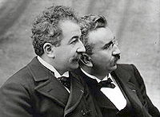

 В 1895 году французы Луи и Огюст Люмьер получили патент на изобретённый ими аппарат «Синематограф».
22 марта того же года на конференции, посвящённой развитию французской фотопромышленности Братья Люмьер представили публике первый фильм на большом экране «Выход рабочих с фабрики». Этот же фильм открыл знаменитый первый платный киносеанс из десяти фильмов в Париже в подвале «Гран-кафе» на бульваре Капуцинок 28 декабря 1895 года. Именно эта дата и стала датой празднования «Международного дня кино».
«День российского кино» в годы перестройки был объединён в один день с «Международным днём кино», однако в 2002 году, по инициативе Службы кинематографии Министерства культуры РФ, вновь стал самостоятельным праздником, который снова отмечается 27 августа.
Чуть ранее, в том же 1895 году, французы Огюст и Луи Люмьер получили патент на изобретенный ими аппарат «Синематограф». 22 марта 1895 года братья устраивают в Париже первый в истории киносеанс. Они показывают — пока только узкому кругу друзей — коротенькую ленту «Выход рабочих с завода Люмьер».
Но днем рождения кино считают именно 28 декабря 1895 года, когда в парижском кафе на бульваре Капуцинок Люмьеры представили уже широкой публике первый в мире короткометражный фильм «Прибытие поезда на вокзал Ла Сьота». Это был первый фильм в истории кинематографа, который был показан публике за деньги.
Демонстрация «Прибытия поезда на вокзал Ла Сьота» вызвала настоящую панику у зрителей: они вскакивали с мест и убегали из зала, боясь, что приближающийся на экране поезд раздавит их…
В России премьера первого фильма состоялась 15 октября 1908 года. Это был фильм «Понизовая вольница» режиссера Владимира Ромашкова по мотивам народной песни о Стеньке Разине «Из-за острова на стрежень». Длился первый российский фильм всего семь минут.
С тех пор кинематограф прошел большой путь в развитии и претерпел масштабные изменения: от немого кино до звукового, от черно-белого до цветного, от пленочного до цифрового. И, как известно, фильмы бывают разных жанров: научные, документальные, публицистические, художественные. А по всему миру сегодня проводится много различных кинофестивалей: Московский Международный кинофестиваль, Каннский кинофестиваль, Венецианский международный кинофестиваль, «Берлинале», фестиваль имени братьев Люмьер, «Оскар» и другие.
Также в разных странах мира установлены свои Дни национального кинематографа. Например, День российского кино отмечается ежегодно 27 августа.
| Назад | Вперёд | На Главную |